This package supplies the coordinator state machine, correlated leases, and owned takeover preparation for M5. The network runner now enforces the resulting permit at gameplay boundaries. An authenticated coordinator service and SQLite durable store now have native and real-process gates. The Room driver now passes initial planned/crash migration gates with surviving Cavecrawl clients; the full M5 failure matrix and provisioning flow remain open. See service and storage for the new API and deployment contract. The admission backend now provides durable invite/join transactions and live service credential installation; public provisioning remains open.
Decision model#
The coordinator governs one room/content contract. A trusted admission service
provisions Member records: stable member ID, process incarnation, endpoint, and
permission to receive authority data/host. Cooperative rooms may nominate trusted
players; dedicated rooms require the infrastructure flag as well. A peer cannot
register or promote itself through an unauthenticated call.
coordinator_start grants the configured bootstrap member epoch 1.
coordinator_renew requires the same owner/incarnation and epoch, a still-live
lease, a newer request sequence, and a nondecreasing known authority tick.
Replaying a renewal request does not extend its expiry. An expired owner must use
the recovery protocol; it cannot revive the expired epoch with another renewal.
The current owner nominates a successor and the gameplay connection binding used
for its checkpoint. The successor makes an owned Prepared copy of an exact
validated archive, then reports that point with coordinator_prepare. Claiming
requires that exact point and identity, continued eligibility, and the configured
limit on rollback from the coordinator's last known authority tick. This is not
an upper bound on unobserved work after the last heartbeat.


Planned release is permitted before the old deadline only after the old process
irreversibly retires its local Lease. The resulting Retirement identifies the
owner, room, epoch, and observed revision. It is authenticated caller data, not a
cryptographic certificate. coordinator_release also requires the exact prepared
final checkpoint, at least as recent as the last recorded authority tick. Once
released, the old lease cannot be reactivated by a delayed reply. Abrupt claims
wait for expiry. Each successful claim increments the epoch and records the
recovery point and kind. Competing/old-owner claims and stale incarnations fail.
Durable store and coordinator restart#
Every mutation calls Commit(user, expected_revision, next_record) before changing
the active record or exposing a grant. The backend must atomically compare the
revision and durably store the complete next record. A failure poisons that
coordinator instance and suppresses further grants/views. Model tests use an
in-memory CAS ledger; the separate SQLite adapter has transaction/restart gates.
Initialization also commits a new coordinator generation/revision, invalidating an earlier instance's subsequent CAS writes. When reopening a record that has issued an epoch, the new coordinator does not reuse its predecessor's absolute clock deadline. It quarantines for:
ceil(lease_ms × (1 + drift) / (1 - drift)) + margin_ms
before permitting a claim. This outlasts the previous possible lease even with opposite clock-rate errors. The persisted epoch floor is preserved. This requires one authoritative, linearizable durable store; independent writable copies of a room's store are not a supported coordination topology. Do not reset the record or reuse a room ID to bypass unavailable storage or the quarantine.
Coordinator loss therefore stops authority after existing leases expire. A partition cannot independently elect a host through this profile. The coordinator reachable side may recover after the old lease expires; isolated participants freeze and later replace their state from the approved authority. Divergent inventories are never merged. A quorum-based decentralized profile remains separate work for deployments that cannot use a decision service.
Clock and reply contract#
Lease records the local time and sequence before sending a request. Only one
request is outstanding; retransmission uses that original sequence/time. A valid,
authenticated reply contains relative remaining duration, rather than a foreign
machine's absolute deadline. With maximum clock-rate error d, the local deadline is:
request_start + floor(remaining_ms × (1 - d) / (1 + d)) - margin_ms
The larger of the local and coordinator drift bounds is used. Because the request starts before the coordinator processes it, this expires conservatively even without synchronized clock origins and with delayed replies. Expired replies, old revisions/epochs, clock reversal, and unavailable clocks cannot revive a lease. The default bound is 1,000 ppm with a 20 ms margin; it is a deployment assumption, not a measured guarantee for arbitrary clocks or virtual machines.
Read current clock time for every permit check. It must advance during sleep and process suspension. Native adapters use Apple's mach_continuous_time, Linux CLOCK_BOOTTIME, and Windows QueryPerformanceCounter. Godot's normal tick clock being monotonic alone is insufficient evidence that it includes system sleep. Unsupported targets return an unavailable native clock; browser lease support requires a verified embedding clock. Mac native execution and Linux/Windows/WASM type-checks pass; actual Linux/Windows suspend behavior has not been exercised by this repository's gate.
Runner enforcement#
Set Config.require_permit=true and provide Permit at server/client initialization.
lease_permit supplies it from a live Lease; an authority lease additionally
requires that the view's owner match this process's identity. An observer/client
lease tracks the currently approved epoch without granting itself authority.
The runner checks before accepting local gameplay, pumping gameplay packets,
predicting/advancing ticks, and issuing gameplay sends. Timeline.advance also
checks an optional Commit_Gate after simulation but before publishing the
candidate. Rejection preserves the entire history ring, including its oldest slot,
and the action frontier. Client prediction also restores its action's pending flag.
This is deliberately not an advance-then-rewind workaround, which would already
have overwritten the oldest frame when the ring is full.
net.Error.Fenced is an expected pause. Godot Session exposes session.fenced,
stops ticking and clears clock backlog, and allows the application to keep its
coordinator/recovery UI running. Permit checks must read a fresh clock, not a value
cached at frame start. Packets accepted by a transport before expiry may arrive
later; the approved new epoch fences them at the new authority/client context.
External persistent effects still need resource-side epoch/idempotency enforcement;
the future outbox is not implemented here. This profile assumes cooperative
participants and authenticated coordinator calls, not Byzantine host resistance.
Prepared owns canonical archive bytes independently of the receiver's recyclable
slots. prepared_restore requires a live owner lease whose recovery point exactly
matches them, verifies the bytes, and restores a fresh server with the permit and
new epoch. The caller provides the selected game seat/policy adapter; a future
session driver will map the authenticated member to its stable game token/seat.
Requiring permits is part of the handshake contract and survives checkpoints. The current experimental network protocol is 5, archive format 3, control RPC 2, and decision record 3. Earlier Replay archives are rejected; no automatic converter is claimed. Original Kit saves/projects are unaffected.
Validation and remaining integration#
nix develop --command bash tests/replay_authority/run.sh
nix develop --command bash tests/replay_authority_godot/run.shTwenty-four native tests cover partition timing, planned retirement, storage failure, restart quarantine/CAS fencing, late replies, renewal replay, adverse clock drift, eligibility/incarnations, known rollback limits, consecutive migrations, old-host return, durable-record codecs, native time, expiry during server/client simulation, history retention, and owned-checkpoint restoration under the exact grant. The prepared restore test transfers a real archive over the memory transport before destroying the receiver and changing authority. It is not a real-process takeover.
The Godot gate uses the native clock to run and then fence the actual cave model; it verifies the head stays fixed and renewal after expiry is denied. It uses an in-process coordinator and test ledger. Separate Room gates now route approved endpoints/epochs into live Cavecrawl sessions and reconcile surviving clients during planned/crash takeover. Those initial gates do not complete the full M5 matrix.
Durable member removal is an optional authenticated operation for the current live authority. It atomically disables the member and invalidates its prepared succession right without changing existing RPC schemas.